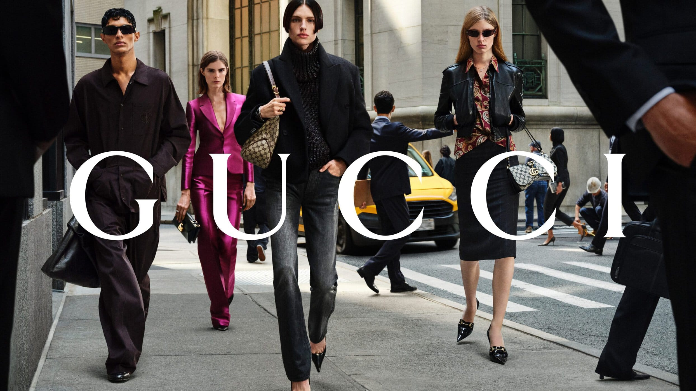

Gucci, le recap d'un défilé qui tranche
Lumières froides, silence tendu, et une maison qui joue gros : Gucci avait rendez-vous avec son avenir. Retour sur un défilé qui en dit long, non seulement sur une collection, mais sur l'état d'une industrie du luxe tout entière, prise dans une tempête qu'elle n'avait pas vue venir.

Une maison à la croisée des chemins
Après des années d'une esthétique flamboyante, maximaliste, reconnue entre mille, Gucci tourne une page. Le défilé marque une volonté claire : revenir à l'essentiel, à la coupe, à l'élégance. Moins de folklore, plus de silhouette. Moins de bruit, plus de précision. Un changement de ton qui ne passe pas inaperçu.
Ce virage est un pari risqué. Gucci avait bâti son succès récent sur l'excès, l'audace, le mélange assumé du kitsch et du sublime. Revenir à une forme de sobriété, c'est risquer de perdre ce qui faisait sa signature pour gagner autre chose : la crédibilité d'une maison qui maîtrise son classicisme.
Dans une telle décision, tout est affaire d'équilibre. Changer trop, c'est renier son identité ; changer trop peu, c'est stagner. Ce défilé tente de trouver le point exact entre fidélité et renouveau — l'exercice le plus difficile qui soit pour une maison de cette envergure.
Ce qu'on a vu défiler
Des lignes nettes, des matières nobles, une palette resserrée, une allure presque architecturale. Chaque pièce semblait pensée pour durer plutôt que pour choquer. Le vêtement reprend le dessus sur le décor, et c'est tout un message.
On sentait dans cette collection une forme de retenue assumée, presque un soulagement après des années de surenchère. Comme si la maison disait : on peut encore être désirable sans crier, élégant sans provoquer, moderne sans trahir. Un pari sur l'intelligence du public plus que sur son réflexe.
Le poids de l'héritage
Diriger Gucci, c'est hériter d'un monument : des décennies de style, des codes reconnus dans le monde entier, des attentes immenses. Chaque collection est jugée non pas seule, mais à l'aune de tout ce qui l'a précédée.
Le défi est délicat : honorer l'histoire sans s'y enfermer, surprendre sans trahir. Ce défilé tente justement cet équilibre, en puisant dans les archives de la maison tout en les épurant. Une façon de dire que le futur de Gucci se construira sur ses fondations, pas contre elles.
C'est le propre des très grandes maisons : leur passé est à la fois leur plus grande force et leur plus lourd fardeau. On vient chez Gucci pour du Gucci, mais on se lasse d'une maison qui se répète. Toute la difficulté est de rester reconnaissable tout en se réinventant.
La valse des directeurs artistiques
Ce défilé s'inscrit aussi dans une époque d'instabilité créative. Les grandes maisons changent de directeur artistique à un rythme effréné, chacun devant tout réinventer en quelques saisons à peine. On demande à un seul homme de sauver un empire, et vite.
Cette pression du résultat immédiat est le mal profond de l'industrie. Elle laisse peu de temps pour construire une vraie vision, imposer un style, laisser mûrir une idée. Chaque défilé devient un examen de passage, et la créativité finit otage de l'urgence et des chiffres trimestriels.
Un cap plus qu'une collection
Comme souvent face à un changement, les avis se partagent. Certains saluent une maturité retrouvée, d'autres regrettent l'audace d'avant. Mais faire réagir, dans la mode, c'est déjà avoir réussi. L'indifférence serait un échec ; la discussion est une victoire.
Car au-delà des pièces, ce défilé pose une direction. Il dit où la maison veut aller, quel visage elle veut montrer au monde, quelle idée du luxe elle entend défendre. Un défilé, parfois, vaut moins pour ce qu'il montre que pour ce qu'il annonce — et celui-ci annonçait beaucoup.
Gucci n'a pas seulement présenté des vêtements, il a affiché une intention. Et c'est l'intention qu'on retiendra.